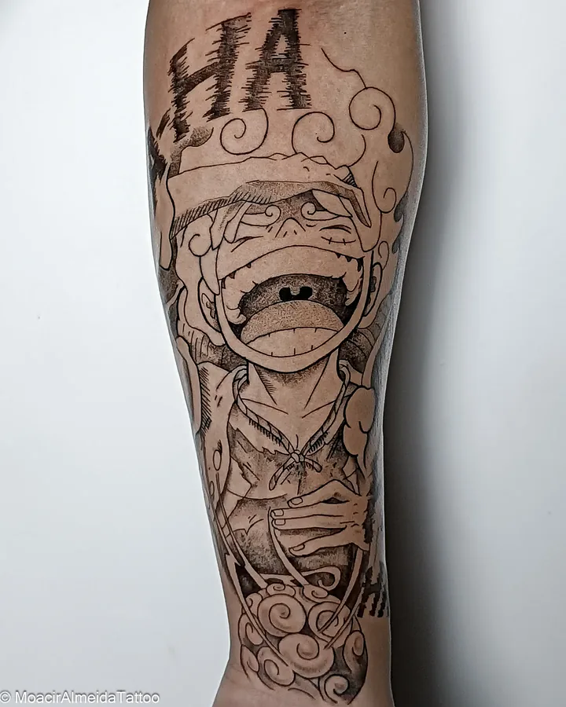
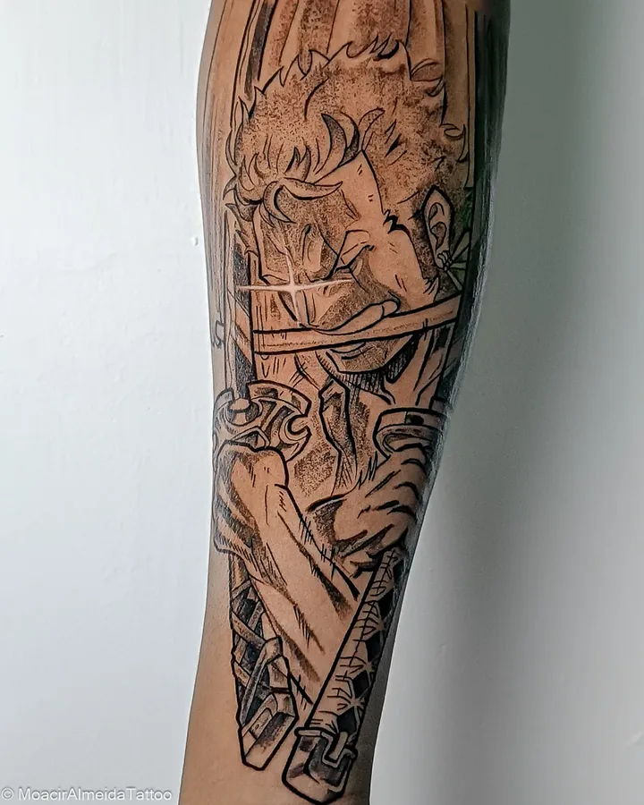
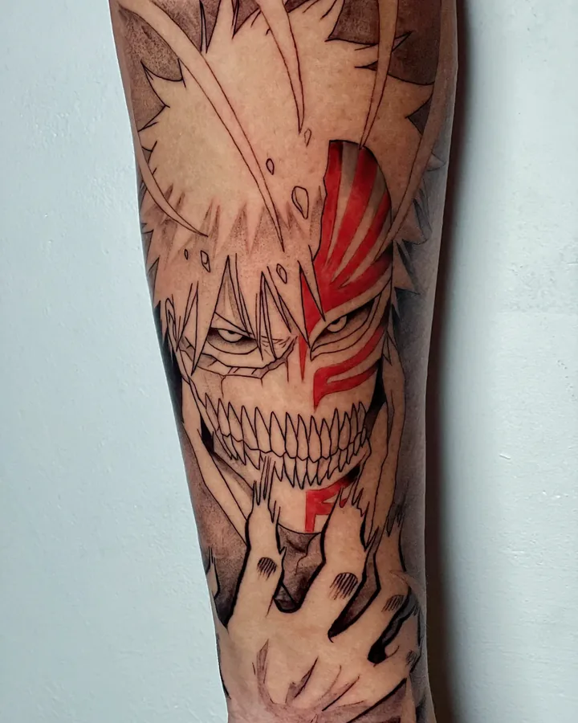
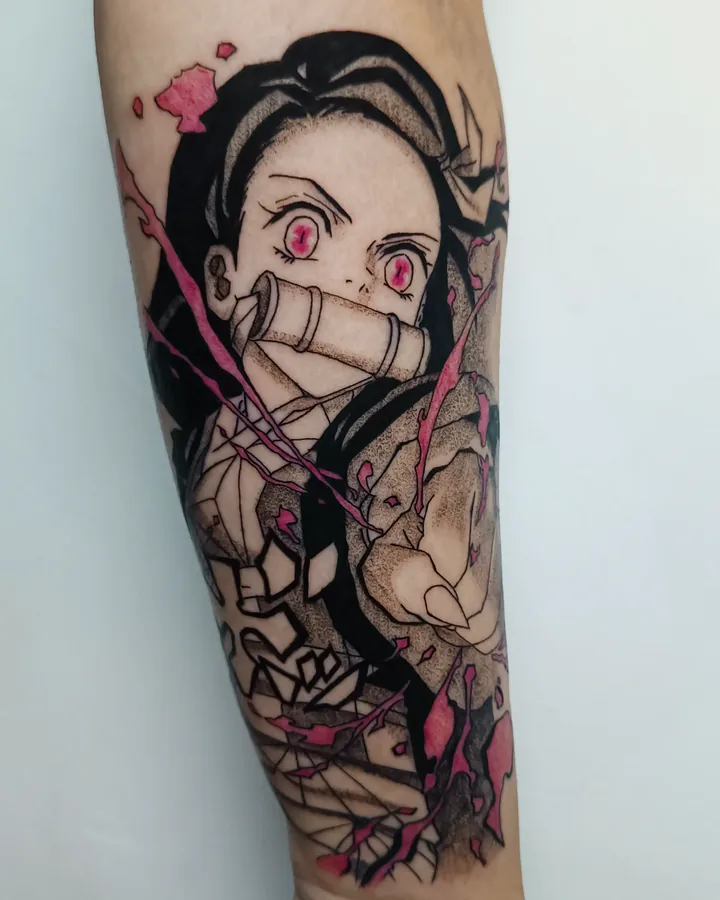
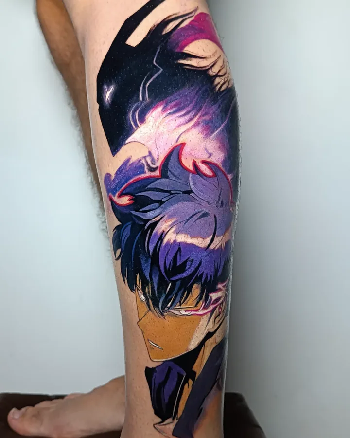
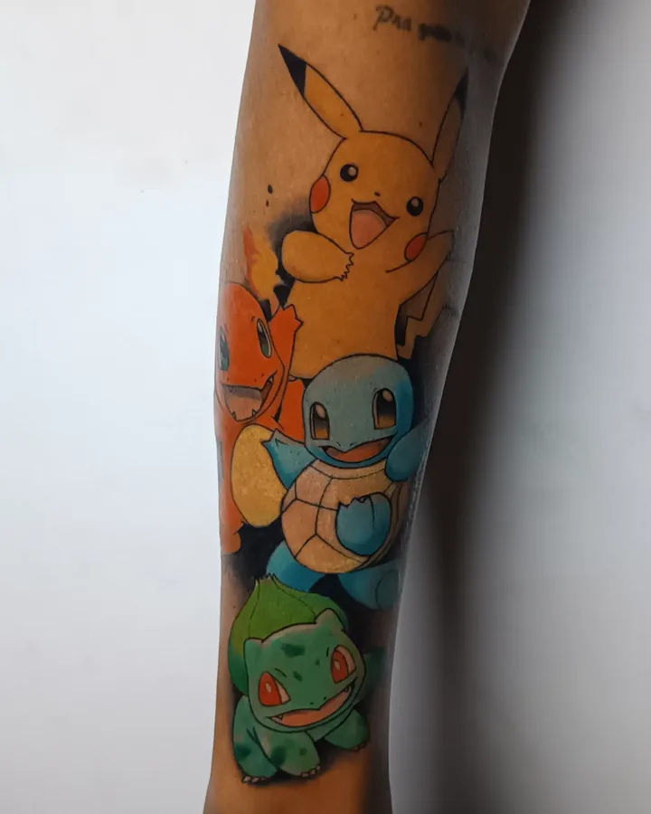

Preto e cinza
Traço e sombra, como página de mangá. Luffy e Zoro, de One Piece.
Casa Amarela · Recife
Traz o personagem que você já salvou. Eu refaço pro seu corpo — tamanho, posição e traço — em preto e cinza, preto com cor ou colorido.
Arraste pro lado — ou toque numa foto pra ver de perto. Todas feitas no estúdio, a partir da referência que o cliente trouxe.
Cor, contraste e detalhe vistos com a pele em movimento. Gostou? O botão abre o WhatsApp já falando desse trabalho.
O mesmo personagem muda muito com a cor. Eu te ajudo a escolher pelo tamanho, pelo lugar e pelo que combina com ele.


Traço e sombra, como página de mangá. Luffy e Zoro, de One Piece.


Uma cor só, onde ela conta: a máscara do Ichigo, o rosa da Nezuko.


A paleta inteira do personagem. Jin-Woo, de Solo Leveling, e os iniciais de Pokémon.
Do print salvo no celular até a tattoo cicatrizada.
A imagem que salvou, o tamanho mais ou menos e a parte do corpo. Com isso eu já passo o orçamento.
Ajusto proporção, posição e traço pra funcionar na sua pele — não é a imagem impressa.
Agenda confirmada com sinal. No dia, atendo só você — sem fila e sem pressa.
Você sai com as orientações e eu acompanho até sarar.
Manda a referência que eu te digo o tamanho ideal, onde fica melhor e quanto fica.
Chamar no WhatsApp →